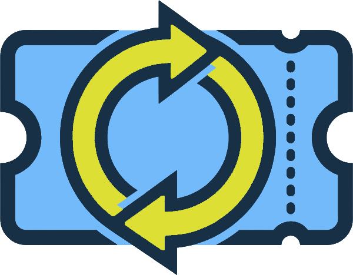

No events match your filters.

Tick ItTick It is your go-to spot for local events worldwide! Discover meetups, workshops, sports sessions, and social gatherings — or post your own and let the community come to you. Join free, show up, and check it off.
No events match your filters.